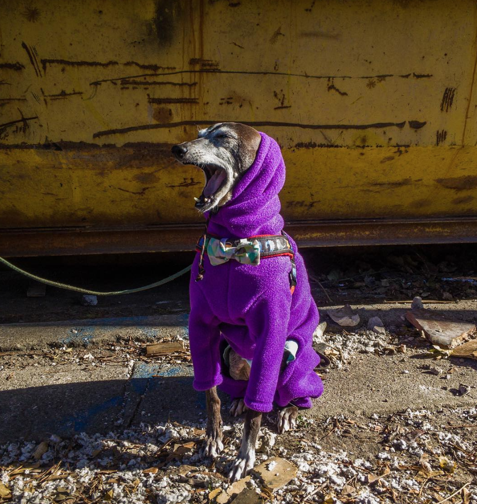

Currently, I am a massage therapist by profession. Previous to massage therapy, I was a dog groomer for 5 years and worked in the pet care industry (including pet shelters, pet nutrition, and grooming) for over ten years. I have an Italian Greyhound who is going senile at almost 15 years of age and a siamese cat who is 13. They are Harold and Maude, respectively.
I am back in school to become a coder. My goal is to become an expert problem solver and design amazing apps that make people's lives easier. My dream would be a remote job and be able to travel the world with my husband, especially since our families live all over the place (NYC, KY, IL, and India). Some places I want to travel to are the Galapagos Islands, Turkey, Italy (to see Gaudi buildings), Tokyo, Yellowstone, Canada, Hawaii, Tokyo, Berlin, and the Grand Canyon.
In my free time I enjoy reading, quilting, drawing, taking care of my plants and pets, cooking South Indian food with my husband, and walking around the neighborhood. I have an Etsy shop where I sell art and currently have a small exhibition up at a local diner!